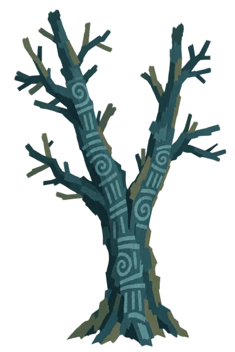
01. 갈라진 고목tree-01-v4.webp ↓
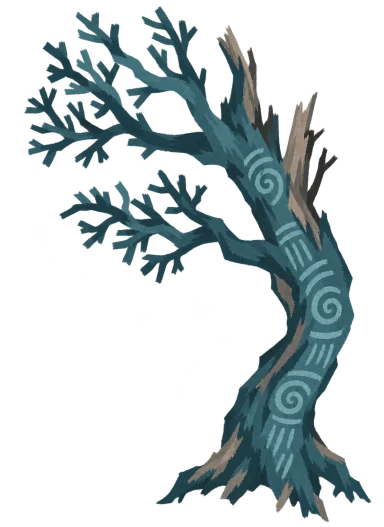
02. 굽은 고목tree-02-v4.webp ↓
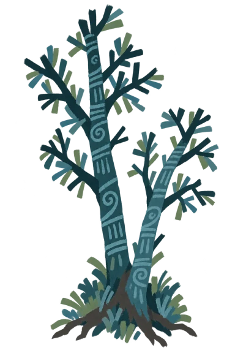
03. 쌍줄기 나무tree-03-v4.webp ↓
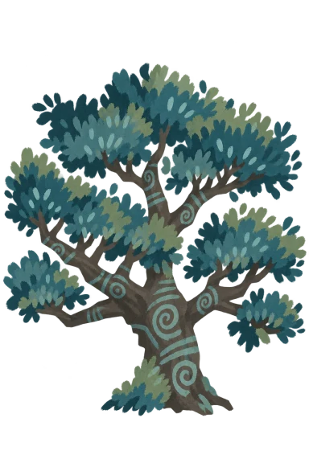
04. 넓은 가지 나무tree-04-v4.webp ↓
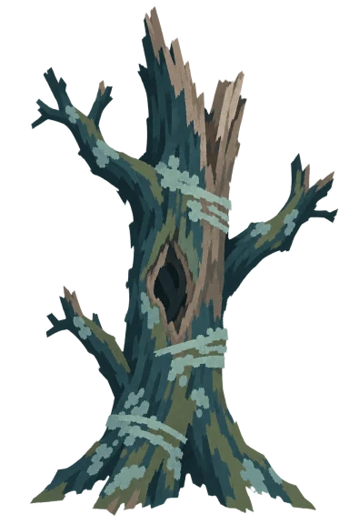
05. 벼락 맞은 나무tree-05-v4.webp ↓
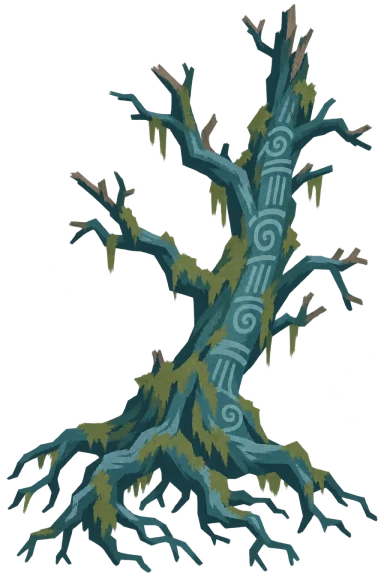
06. 뿌리 드러난 나무tree-06-v4.webp ↓
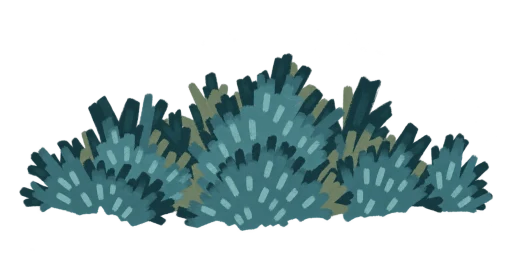
07. 부채꼴 덤불bush-01-v4.webp ↓
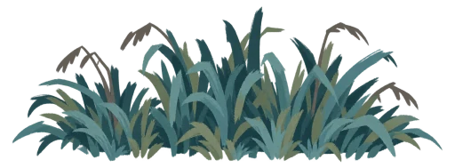
08. 긴 풀 무더기bush-02-v4.webp ↓
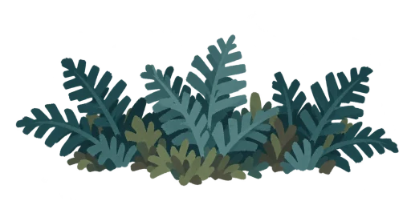
09. 고사리 무더기bush-03-v4.webp ↓
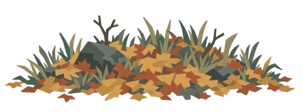
10. 낙엽과 마른 풀bush-04-v4.webp ↓
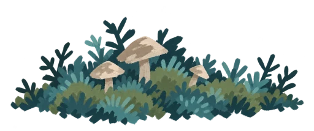
11. 이끼와 작은 버섯bush-05-v4.webp ↓
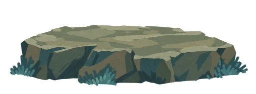
12. 넓적한 바위rock-01-v4.webp ↓
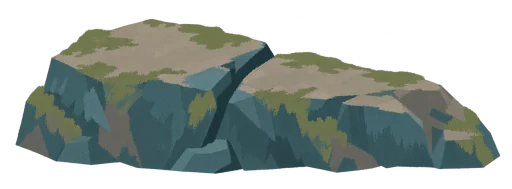
13. 갈라진 바위rock-02-v4.webp ↓
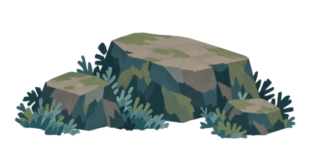
14. 세 바위 무리rock-03-v4.webp ↓
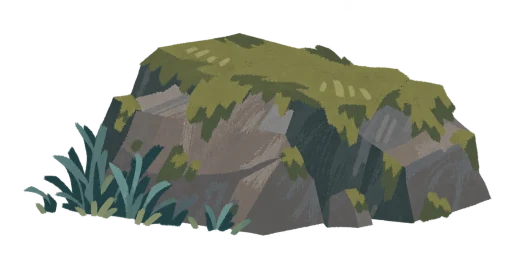
15. 이끼 낀 바위rock-04-v4.webp ↓
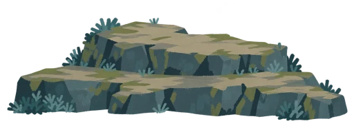
16. 층층 바위rock-05-v4.webp ↓
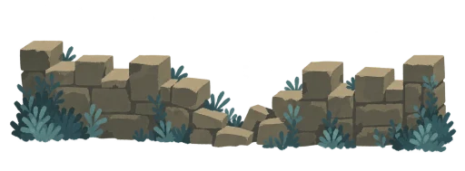
17. 무너진 성벽ruin-01-v4.webp ↓
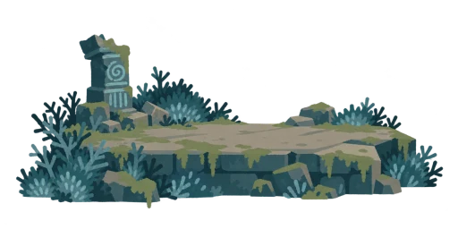
18. 기둥 폐허ruin-02-v4.webp ↓
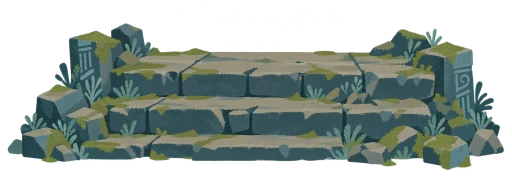
19. 무너진 계단ruin-03-v4.webp ↓
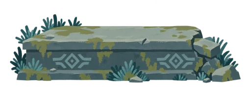
20. 낮은 석조 제단ruin-04-v4.webp ↓